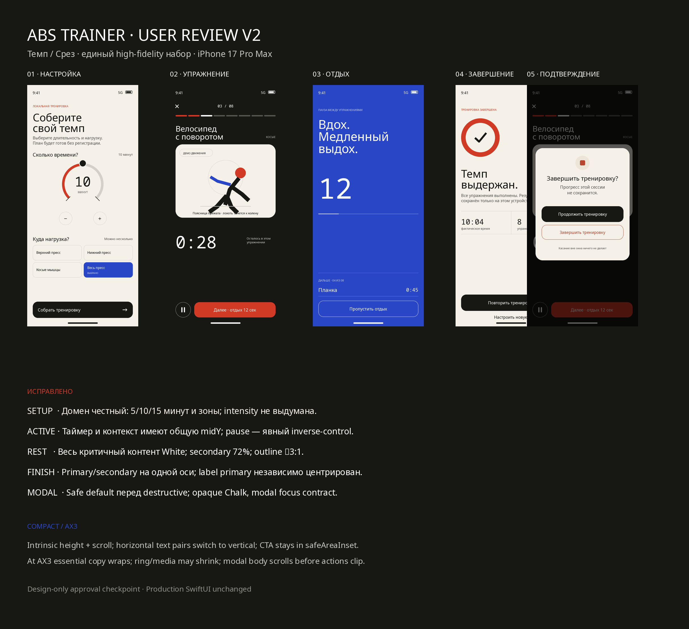

Design-only approval checkpoint
ABS Trainer · User Review V2
Обновлённый high-fidelity набор «Темп / Срез». Пять состояний, реальные русские строки, iPhone 17 Pro Max, без изменений production-кода.
01НастройкаConfigure-flow: честные 5/10/15 минут, zone choices и одна primary CTA.
02УпражнениеTimer/context на общей оси; pause имеет явный inverse contrast.
03ОтдыхВысокий контраст next-up/time/skip; непрерывное Ultramarine-поле.
04ЗавершениеЕдиная сетка действий и balanced trailing repeat icon.
05ПодтверждениеТематический opaque modal: safe default до destructive, фон заблокирован.
Целостный обзор и аннотации
